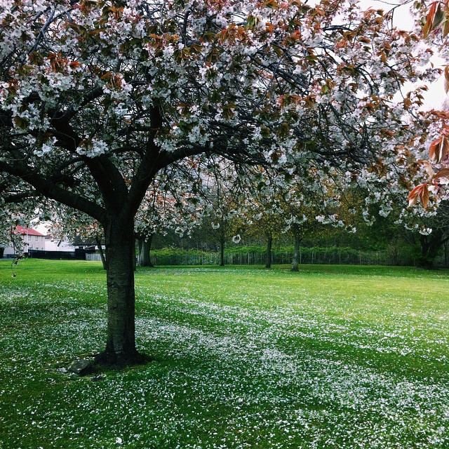

Rector’s
If you can find a seat,
Rector’s is a lovely place to study.
The open-plan design means it’s really bright
and the cheap coffee and soup are definitely a plus.
The staff are also super friendly :)
Fife Coastal Path
No one should ever leave St Andrews without
having walked some of the Fife Coastal Path.
This path extends all the way from
the Tay Estuary to the Forth Bridge (and further!),
but two very nice sections are easily
accessible from St. Andrews.

Craigtoun Park
From Bogward Road, follow the path
that heads south along the Cairnsmill Burn
and follow this stream uphill through a golf course
until you reach Craigtoun Park.
Here, there are some paths that lead you around the park,
and a cafe too.